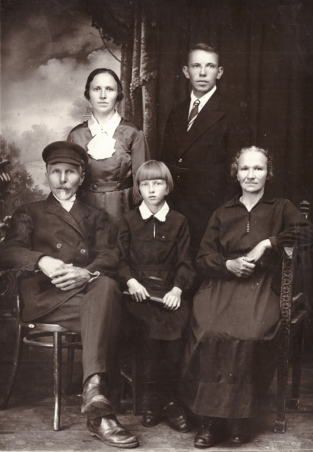

Осины: Дмитрий, Анна, Валя,
Александр, Ефросинья. 1938г. | Итак, с 1917 года семья утвердилась в составе – папа, мама, Нюра и Александр. До середины 1930-х годов все мы занимались домашним хозяйством. Нужно было доводить до ума дом и другие стройки, постепенно обзаводиться мебелью, на что требовались немалые деньги. Спасибо льнопрядильной фабрике, которая поддерживала своего работника - нашего отца. И сам он старался из каждой командировки что-нибудь привозить. После смерти бабушки и деда с вводом «переднего» дома (Осиных) второй этаж дедовского дома мы сдавали квартирантам, а первый этаж использовали как кухню. Всех жильцов я не помню - но один из них, поэт Ю.Златковский подарил мне книжку А.С.Пушкина «Сказки и песни западных славян» с такой надписью: «Милый Шура! Пусть эта небольшая книжечка основателя русской литературы А.С.Пушкина пробудит в тебе любовь к книге и знаниям и будет основанием твоей собственной библиотечки. 8 марта 1929г. Ю.Златковский гор. Пучеж». И я следовал его совету. Чего-чего, а литературы у нас достаточно. Много книг я оставил племяннице Валентине в Пучеже, в том числе «Всемирная География» Элизе Реклю в 5 томах. Много уникальной литературы я покупал в Горьком у монаха-настоятеля Печерского монастыря. Например, «Три березки» С.Есенина и трилогия М.Горького «Детство», «В людях», «Мои университеты» стоили 2р.40к. до реформы 1961 года.
Я хорошо помню большую русскую печь в доме деда, в которой стряпали бабушка, а потом и мама. Готовили пряженцы, а также блины, хорошо промазанные салом или маслом и переложенные мелко нарезанным яйцом. Вокруг большого стола были широкие скамьи, на которых удобно было отдохнуть или выспаться тем из родственников, кто приезжал на базар с ночлегом. Вспоминаются пироги с грибами, с солеными огурцами, рыбой, картошкой с мясом, а также колобки на меду, особенно «Ежовские». Тех, кто оставался на базаре до вечера, мама угощала (перед их отъездом) густой лапшой с сухими белыми грибами. Какой был запах – а о вкусе и говорить нечего! Иногда деревенские, приезжая на базар, привозили нам дров, так сказать, «без сучка и задоринки». Их легко было колоть, особенно в мороз. Но визиты родственников стали реже после продажи дедовского дома в 1933г.
|